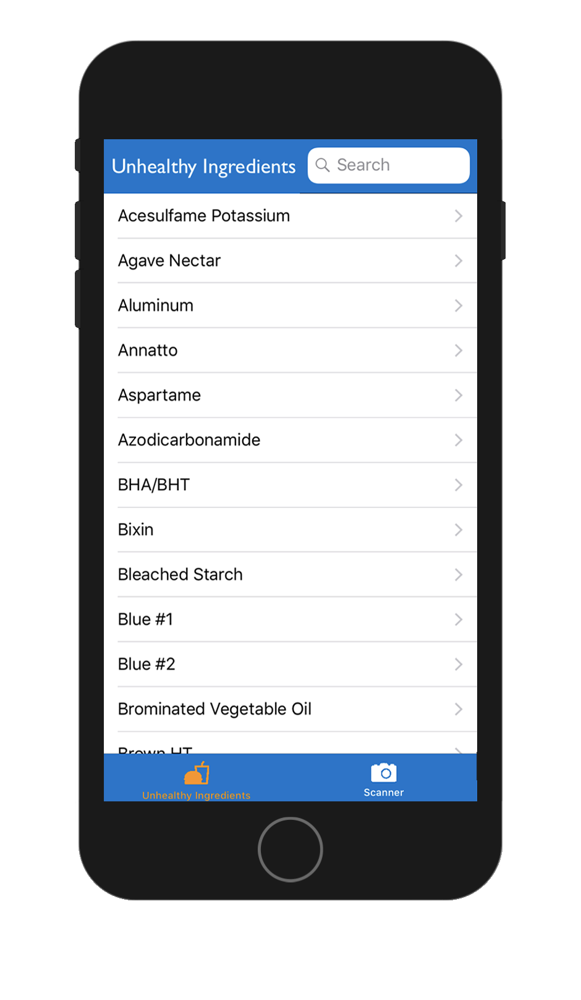
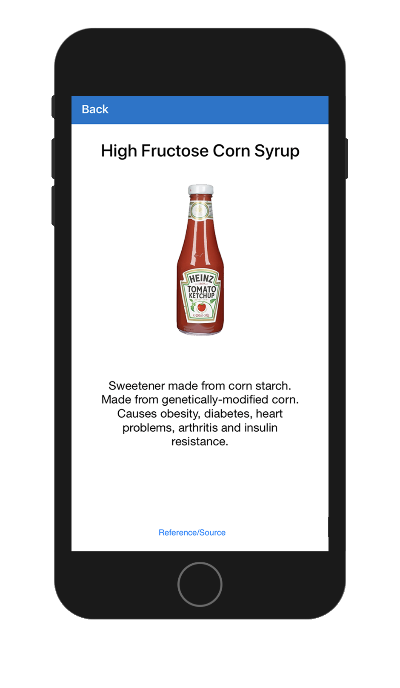

Scroll down (or use the navigator on the right) to view some projects I've been working on.
Nova
Nova is an angular web platform being developed for the councilor of California's community
colleges that allows users at community colleges all over California to submit
proposals for government funding for various educational programs. The Nova system
also includes data analysis and visualizations. I worked on this project
while employed as a software engineer at
productOps
over the course of six months, but it is still under development to support functionality
for more funding types. The Nova system currently supports The Strong Workforce
Program's Local Share plans and Regional Share plans, as well as the Adult Education Block
Grant.
- Typescript
- Javascript
- HTML
- CSS
- Node.JS
- Angular.JS
- Looker API
- SQL
Pattern
Pattern is a mobile arcade game for iOS that procedurally generate (1-3) X (1-3) patterns
of different shapes and color layouts. Of the nine generated choices, at least one will match
the target pattern. The user’s goal is to press on the generated pattern that matches the target
pattern within the allocated given time. Pressing a matching pattern will result in the user
receiving points whose value depends on how complicated the pattern was and how
quickly the user found the match. As the game progresses the patterns will become increasingly
more complex, and the amount of time the user has to pick the correct pattern will significantly decrease.
- Xcode
- Swift


Nutrition Vision
Nutrition Vision is a mobile application that can be used to scan the back of
food product nutrition labels and ingredient lists to determine whether the product
is relatively healthy. Health calculations are based on the standard 2000 calorie diet
with average DVs. The application also contains a database of commonly found unhealthy
ingredients in food products. This was my first project utilizing OCR technology.
- Xcode
- Swift
- CocoaPods
- Tesseract OCR
Personal Website
This is the site you are currently using! Built from the ground up
without any web framework, this project was one of my first attempts
at making a website from scratch on my own. I'm happy with the overall
result, but I'm already looking at what can be changed/optimized to
create a better user experience.
- Javascript
- Python
- HTML
- CSS
- jQuery
Munch
Munch is a mobile application that can be used to organize a user's current
food supply, make grocery lists, perform analysis on the type of food a user
purchases/uses over time, create and share new recipes, and try other user's
recipes. As a huge cooking enthusiast, I've always wanted to make an all-in-one
kitchen application. This project is my attempt at this. The user inputs their
current food stock into the Pantry section of this application (through manual input
or grocery list feature). Now the application can let the user know if they have all
the neccesary ingredients when looking at recipes in the Kitchen section. Deciding to
make a recipe will automatically remove the used items from the user's food stock. This
project is my first time using Firebase as a mobile backend.
- Xcode
- Swift
- CocoaPods
- Firebase
- Charts
© Dylan Rothfeld 2017